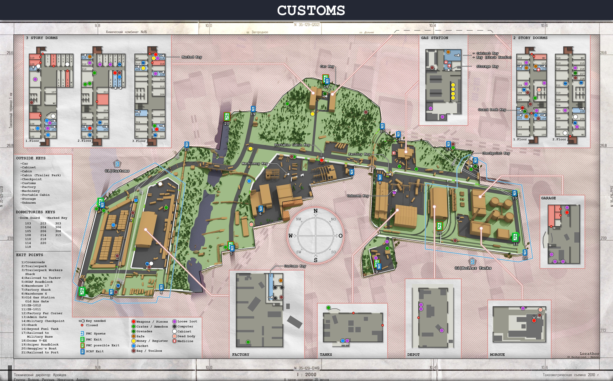
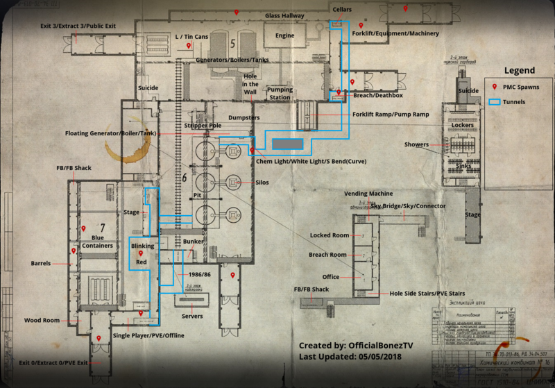
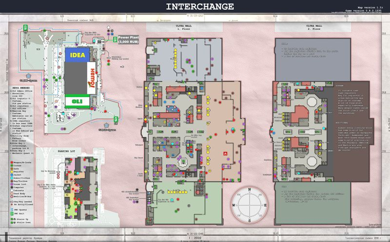
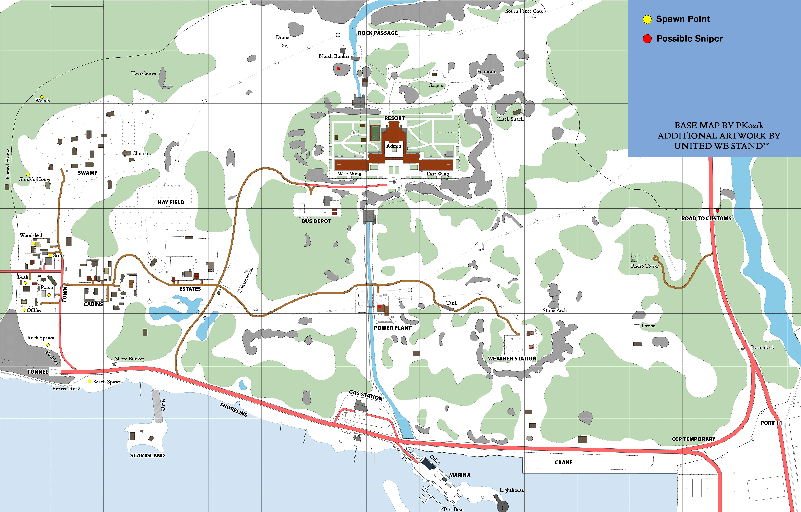
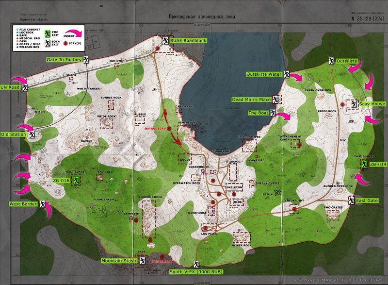
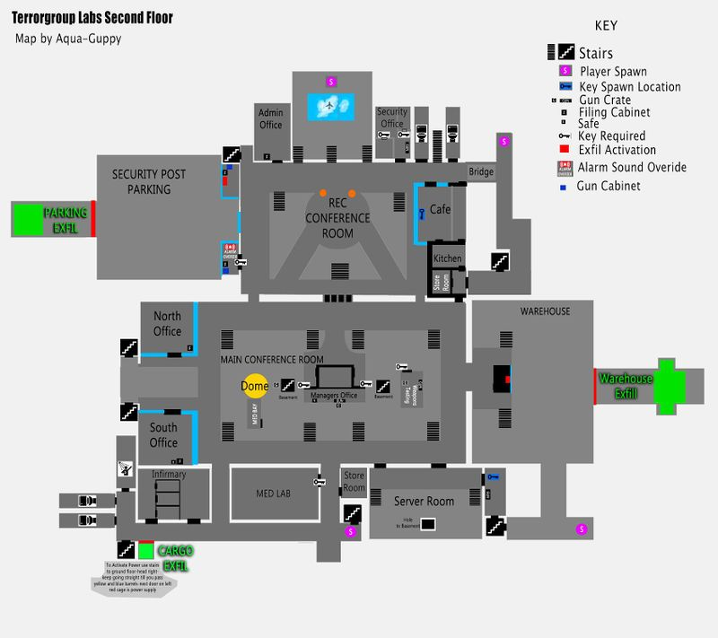

Escape from tarkov is een first person, hyper realistic shooter game. Het is een spel dat is ontwikkeld door het Russisch game development bedrijf, Battlestate Games.
Escape from tarkov speelt zich af in een fictieve regio 'Norvinsk', dat zich bevind in het Noordwest-Rusland. Dit gebied bevind zich rond een 'speciale economische zone' die als toegangspoort dient tussen Rusland en Europa, dit trok echter bedrijven aan met corrupte bedoelingen en zo werd Tarkov het middelpunt voor een groot politiek schandaal waarbij de corrupte bedrijven in Norvinsk betrokken waren.
Een tijd later brak de situatie uit in een gewapend conflict tussen de Russische troepen, de vredestichters van de Verenigde Naties en twee militaire bedrijven: United Security (USEC) en BEAR. De grenzen van de regio Norvinsk waren afgesloten en de gevangen in het midden van de oorlogszone waren geisoleerd van de buitenwereld. USEC werd ingehuurd door de Terra groep, een van de corrupte bedrijven die bij het schandaal betrokken waren om onderzoeken tijdens het conflict te belemmeren. De BEARs zijn ingehuurd door de Russische regering om bewijsmateriaal over de Terra Group te achterhalen.
De speler heeft als doel de stad van Tarkov te ontvluchten door voor een van deze particuliere militaire bedrijven te werken.
Customs
Factory
Interchange
Shoreline
Woods
The Labs
In tarkov is het mogelijk om je wapens volledig te modificeren, elk wapen heeft honderden attachments die allemaal unieke stats hebben. Hierdoor maakt het spel het mogelijk om wapens die door spelers inelkaar gezet zijn uniek te maken.
Tijdens het spelen van tarkov kan er van alles gebeuren. Je character kan botten breken, wonden hebben, hersenschudding, trauma's etc..
Al deze effecten beinvloeden je spel tijdens het spelen en zo word tarkov een lastig spel. Je moet nadenken over wat je doet omdat je tijdens het spelen geen onrealistische dingen kunt doen.
Ook hebben dingen zoals het weer, hoe zwaar je gear weegt, uithoudingsvermogen (ingame) invloed op hoe jij het spel speelt.